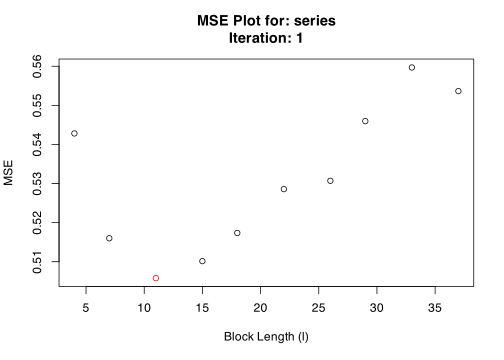

blocklength is an R package used to automatically select the block-length parameter for a block-bootstrap. It is meant for use with dependent data such as stationary time series.
The Story
Regular bootstrap methods rely on assumptions that observations are independent and identically distributed (i.i.d.), but this assumption fails for many types of time series because we would expect the observation in the previous period to have some explanatory power over the current observation. This could occur in any time series from unemployment rates, stock prices, biological data, etc. A time series that is i.i.d. would look like white noise, since the following observation would be totally independent of the previous one (random).
To get around this problem, we can retain some of this time-dependence by breaking-up a time series into a number of blocks with length l. Instead of sampling each observation randomly (with replacement) like a regular bootstrap, we can resample these blocks at random. This way within each block the time-dependence is preserved.
The problem with the block bootstrap is the high sensitivity to the choice of block-length, or the number of blocks to break the time series into.
The goal of blocklength is to simplify and automate the process of selecting a block-length to perform a bootstrap on dependent data. blocklength has several functions that take their name from the authors who have proposed them. Currently, there are two methods available:
hhj()takes its name from the Hall, Horowitz, and Jing (1995) “HHJ” method to select the optimal block-length using a cross-validation algorithm which minimizes the mean squared error (MSE) incurred by the bootstrap at various block-lengths.pwsd()takes its name from the Politis and White (2004) Spectral Density “PWSD” Plug-in method to automatically select the optimal block-length using spectral density estimation via “flat-top” lag windows of Politis and Romano (1995).
Under the hood, hhj() uses the moving block bootstrap (MBB) procedure according to Künsch (1989) which resamples blocks from a set of overlapping sub-samples with a fixed block-length. However, the results of hhj() may be generalized to other block bootstrap procedures such as the stationary bootstrap of Politis and Romano (1994).
Compared to pwsd(), hhj() is more computationally intensive as it relies on iterative resampling processes that optimize the MSE function over each possible block-length (or a select grid of block-lengths), while pwsd() is a simpler “plug-in” rule that uses auto-correlations, auto-covariance, and the spectral density of the series to optimize the choice of block-length.
Installation
You can install the released version from CRAN with:
install.packages("blocklength")You can install the development version from GitHub with:
# install.packages("devtools")
devtools::install_github("Alec-Stashevsky/blocklength")Use Case
We want to select the optimal block-length to perform a block bootstrap on a simulated autoregressive AR(1) time series.
First we will generate the time series:
library(blocklength)
# Simulate AR(1) time series
series <- stats::arima.sim(model = list(order = c(1, 0, 0), ar = 0.5),
n = 500, rand.gen = rnorm)Now, we can find the optimal block-length to perform a block-bootstrap. We do this using two methods.
1. The Hall, Horowitz, and Jing (1995) “HHJ” Method
## Using the HHJ Algorithm with overlapping subsamples of width 10
hhj(series, sub_sample = 10, k = "bias/variance")
#> Pilot block length is: 3
#> Registered S3 method overwritten by 'quantmod':
#> method from
#> as.zoo.data.frame zoo
#> Performing minimization may take some time
#> Calculating MSE for each level in subsample: 10 function evaluations required.
#> Chosen block length: 11 After iteration: 1

#> $`Optimal Block Length`
#> [1] 11
#>
#> $`Subsample block size (m)`
#> [1] 10
#>
#> $`MSE Data`
#> Iteration BlockLength MSE
#> 1 1 4 0.5428141
#> 2 1 7 0.5159969
#> 3 1 11 0.5058036
#> 4 1 15 0.5101443
#> 5 1 18 0.5173569
#> 6 1 22 0.5285706
#> 7 1 26 0.5307042
#> 8 1 29 0.5459579
#> 9 1 33 0.5596887
#> 10 1 37 0.5536393
#> 11 2 4 0.5404021
#> 12 2 7 0.5165052
#> 13 2 11 0.5083257
#> 14 2 15 0.5096941
#> 15 2 18 0.5099022
#> 16 2 22 0.5251345
#> 17 2 26 0.5297922
#> 18 2 29 0.5411978
#> 19 2 33 0.5595094
#> 20 2 37 0.5541540
#>
#> $Iterations
#> [1] 2
#>
#> $Series
#> [1] "series"
#>
#> $Call
#> hhj(series = series, sub_sample = 10, k = "bias/variance")
#>
#> attr(,"class")
#> [1] "hhj"2. The Politis and White (2004) Spectral Density Estimation “PWSD” Method
# Coerce time series to data.frame
data <- data.frame("AR1" = series)
# Using Politis and White (2004) Spectral Density Estimation
pwsd(data) 
#> $BlockLength
#> b_Stationary b_Circular
#> AR1 9.327923 10.67781
#>
#> $Acf
#> $Acf$AR1
#>
#> Autocorrelations of series 'data[, i]', by lag
#>
#> 0 1 2 3 4 5 6 7 8 9 10
#> 1.000 0.550 0.291 0.175 0.107 0.066 0.049 0.010 -0.078 -0.057 -0.071
#> 11 12 13 14 15 16 17 18 19 20 21
#> -0.081 -0.071 -0.097 -0.073 -0.054 -0.010 0.014 -0.030 -0.042 -0.020 -0.073
#> 22 23 24 25 26 27 28
#> -0.088 -0.050 -0.058 -0.097 -0.049 0.021 0.078
#>
#>
#> $parameters
#> n k c K_N M_max b_max m_hat M rho_k_critical
#> [1,] 500 1 1.959964 5 28 68 3 6 0.1439999
#>
#> $Call
#> pwsd(data = data)
#>
#> attr(,"class")
#> [1] "pwsd"We can see that both methods produce similar results for a block-length of 9 or 11 depending on the type of bootstrap method used.
Acknowledgements
A big shoutout to Malina Cheeneebash for designing the blocklength hex sticker! Also to Sergio Armella and Simon P. Couch for their help and feedback!